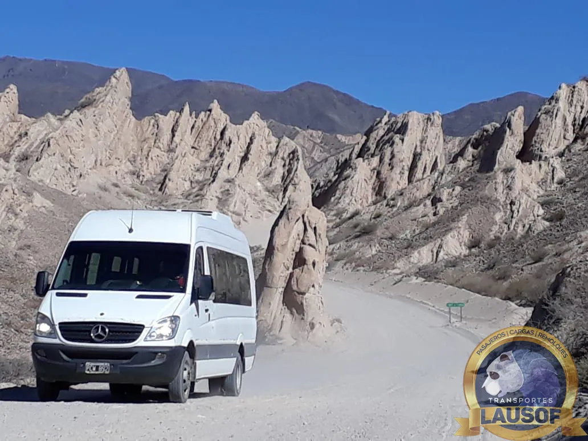
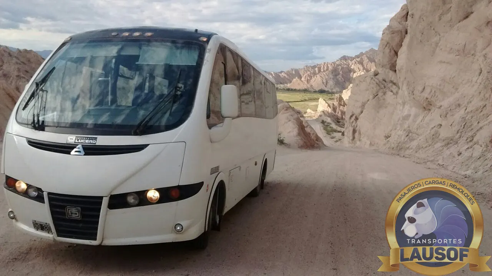

Valles Calchaquíes · Ruta 33 y Ruta 40
Traslado de Salta a Cachi, y la vuelta por la Ruta 40
De Salta a Cachi por la Cuesta del Obispo y la Recta del Tin Tin, dentro del Parque Nacional Los Cardones. Desde Cachi, el circuito sigue por la Ruta 40 hasta Cafayate y vuelve a Salta por la Quebrada de las Conchas. Combis y camionetas 4x4 con chofer, en un día o en varios.
Salta – Cachi
Por la Cuesta del Obispo y la Recta del Tin Tin
Son unos 157 km. El camino sale de Salta por la Ruta 68 hasta El Carril, toma la Ruta Provincial 33 por Chicoana y la Quebrada de Escoipe, y sube la Cuesta del Obispo hasta la Piedra del Molino, a unos 3.348 metros. Del otro lado, la Recta del Tin Tin cruza 18 km en línea recta, a unos 3.000 metros, entre cardones. En Payogasta empalma con la Ruta 40, y quedan 10 km hasta Cachi.
En la Cuesta todavía quedan unos 15 km de ripio. Vialidad de Salta anunció en agosto de 2026 la obra para asfaltarlos; mientras tanto, el tramo se hace despacio y con cuidado, y en invierno puede haber nieve. Por eso elegimos la unidad según la época y el estado del camino.
La Recta del Tin Tin está dentro del Parque Nacional Los Cardones, que protege más de 64.000 hectáreas y tiene acceso gratuito. El desvío al Valle Encantado (4 km con mucha pendiente) no se recomienda en vehículo si el camino está húmedo.
| Tramo | Distancia y camino |
|---|---|
| Salta – El Carril | Unos 36 km por la Ruta 68. Asfalto. |
| El Carril – Piedra del Molino | Unos 67 km por la Ruta 33, con la Cuesta del Obispo. Asfalto y unos 15 km de ripio en la Cuesta. |
| Piedra del Molino – Payogasta | Unos 44 km por la Recta del Tin Tin. Asfalto. |
| Payogasta – Cachi | Unos 10 km por la Ruta 40. Asfalto. |
| Total | Unos 157 km, alrededor de 2 h 30 de manejo sin paradas. Con la Cuesta y las paradas, la ida lleva más. |
Distancias y tiempos aproximados según Ruta0; kilómetros de ripio según Vialidad de Salta, citada por El Tribuno el 20/08/2026 (consultado el 10/10/2026).
Cachi – Cafayate
La vuelta por la Ruta 40: Seclantás, Molinos, Angastaco y San Carlos
Entre Cachi y Cafayate la Ruta 40 recorre unos 160 km por los pueblos de los Valles Calchaquíes y la Quebrada de las Flechas. Casi todo el tramo es de ripio, con partes de arena y de serrucho: el asfalto aparece recién cerca de Cafayate. Sin paradas largas, lleva entre tres horas y media y cuatro horas.
El 9 de octubre de 2026 Vialidad Nacional informaba la ruta habilitada, con máquinas trabajando entre Seclantás y el río Vallecito y entre Molinos y Angastaco, y pedía circular con precaución. Después de las lluvias de verano algunos tramos se desvían por caminos alternativos. Antes de cada salida revisamos el estado de las rutas nacionales.
El circuito completo Salta – Cachi – Cafayate – Salta suma unos 500 km, con mucho ripio en el medio. Se puede hacer en un día largo, pero lo recomendamos en dos o más, con noche en Cachi o en Cafayate. Desde Cafayate, la vuelta a Salta es por la Ruta 68 asfaltada (ver Salta – Cafayate).
| Tramo del circuito | Distancia y camino |
|---|---|
| Salta – Cachi | Unos 157 km por la Ruta 33 y la Cuesta del Obispo. |
| Cachi – Cafayate | Unos 160 km por la Ruta 40, casi todo ripio. |
| Cafayate – Salta | Unos 190 km por la Ruta 68, asfaltada. |
Ruta 40: distancia por tramos según Perfil (2020) y viajeros que la hicieron en 2026; estado de Vialidad Nacional del 09/10/2026, 8:30 (consultado el 10/10/2026). Los tiempos son estimaciones.
Formas de viajar
Solo ida, el día o el circuito
Desde su hotel en Salta o el aeropuerto hasta su alojamiento en Cachi, con paradas en la Cuesta y en el Parque Nacional.
Salta – Cachi – Salta por el mismo camino, con tiempo para recorrer el pueblo. Es un día largo de montaña.
Dos días o más: Cachi, Seclantás, Molinos, Angastaco, San Carlos y Cafayate, y la vuelta a Salta. La unidad queda con el grupo.
Unidades con chofer para programas de varios días en los Valles, con factura A.
La unidad y el grupo
La unidad adecuada para el ripio
- Combis de 19+1 plazas con chofer profesional, preparadas para ripio
- Camionetas 4x4 para grupos chicos o cuando el camino lo pide
- Le decimos qué unidad va al cotizar, según la época y el estado de la ruta
- Grupos más grandes: coordinamos más de una unidad
- El chofer conoce el camino; no es guía de turismo habilitado
- Habilitación CNRT N.º 60284 vigente y agencia de turismo habilitada



Preguntas frecuentes
Lo que se pregunta antes de reservar
¿El camino a Cachi es de ripio?
En parte. De Salta a Cachi quedan unos 15 km de ripio en la Cuesta del Obispo, y el resto es asfalto. Vialidad de Salta anunció en agosto de 2026 la obra para asfaltarlos. Entre Cachi y Cafayate, en cambio, la Ruta 40 es casi toda de ripio.
¿Se siente la altura?
La Piedra del Molino está a unos 3.348 metros y la Recta del Tin Tin a unos 3.000. Hay quien lo nota. Subimos con paradas, y si alguien no se siente bien, lo atendemos antes de seguir.
¿Qué pasa si nieva o llueve fuerte?
En invierno la Cuesta puede amanecer con nieve, y en verano las lluvias cortan o desvían tramos de la Ruta 40. Revisamos el estado de las rutas antes de salir y, si el camino no está en condiciones, se reprograma o se cambia el recorrido con el grupo.
¿Se puede hacer Salta – Cachi – Cafayate – Salta en un día?
Son unos 500 km, con mucho ripio en el medio. Se puede, pero es un día muy largo y se ve poco. Lo recomendamos en dos días o más.
¿Hacen el traslado de Cachi a Cafayate, solo ida?
Sí. Es el tramo de la Ruta 40 y se hace en combi preparada para ripio o en camioneta 4x4.
¿Publican precios?
No. Cada viaje se cotiza según la fecha, la cantidad de pasajeros, la unidad y los días. Respondemos en el día.
También en la región
Otros traslados que hacemos
- Salta – Cafayate por la Quebrada de las Conchas
- Salta – San Antonio de los Cobres y la Puna
- Alquiler de camionetas 4x4
- Salta – Purmamarca, Tilcara y Humahuaca
- Salinas Grandes desde Salta
- Todos los circuitos de Salta y Jujuy
Lausof SRL es una empresa familiar de transporte de Salta: pasajeros desde 2010, habilitación CNRT N.º 60284 y agencia de turismo habilitada. Conozca la empresa.
Actualizado el 10 de octubre de 2026. Distancias, tiempos y estado de rutas consultados ese día.
¿Armamos el viaje a Cachi?
Envíenos la fecha, cuántos viajan y si es solo ida a Cachi, ida y vuelta en el día o el circuito completo por la Ruta 40. Le respondemos con la cotización en el día.
Consultar por WhatsApp